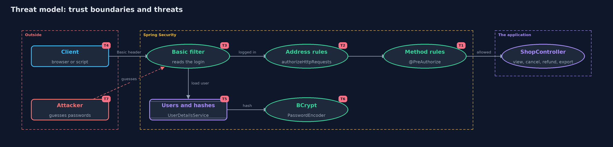

Threat Model — Authentication vs Authorization with Spring Security
A threat model answers four questions: what are we protecting, who or what could harm it, how, and what do we do about it. This one covers this project's own demo system, not a production deployment. Domain: an online store.
Scope
The same store as the plain project, built with Spring Security: the filter chain, HTTP Basic login, BCrypt password
storage, @PreAuthorize rules and a rule on the address. It covers how a configuration can leave a door open and what
the framework does and does not do for you. It runs through MockMvc, so network and server concerns are out of scope.
What we protect (assets)
- Customers' orders, and the right to view or cancel only your own.
- The refund and export actions.
- Stored password hashes.
- The security configuration itself, which decides which requests are checked.
Who and what acts on the system
- Customers Ana and Ben, support Sam, admin Alex.
- An anonymous visitor.
- A developer who adds an endpoint and forgets its rule.
- An attacker guessing passwords against the login.
Trust boundaries
A trust boundary is a line that data or a request crosses between parts that trust each other differently. Threats cluster where those lines are.
- Request to filter chain: where credentials are checked and 401 is decided.
- Filter chain to controller: where the address rules sit.
- Controller proxy to method: where
@PreAuthorizeis checked and 403 is decided. - Password to stored hash: BCrypt.

Each dashed box is a trust boundary. A rose tag such as T1 shows where the threat of that number, in the table below, applies.
Threats, using STRIDE
STRIDE is a checklist of six kinds of threat: Spoofing (S), Tampering (T), Repudiation (R), Information disclosure (I), Denial of service (D), Elevation of privilege (E).
| Id | Kind | Threat | Where it shows up | Control in this project | What is left |
|---|---|---|---|---|---|
| T1 | Elevation of privilege | A logged-in customer reaches refund, cancel or other people's orders | LoginOnlyConfig compared with PolicyConfig |
@PreAuthorize rules on roles and ownership, checked before the method runs |
Rules are code and can be wrong; the filter test covers each person on each endpoint |
| T2 | Elevation of privilege | A new endpoint ships without its rule | ShopController.export |
A second rule on the address, GET /orders/export for ADMIN, in LayeredConfig |
The address rule must be kept in step with new endpoints; a deny-by-default rule at the end is stronger |
| T3 | Spoofing | Someone guesses a password or sends no credentials | the Basic filter, CountingPasswordEncoder |
Passwords are checked against BCrypt hashes; no or wrong credentials give 401 | There is no limit on attempts here; rate limiting is a later project |
| T4 | Information disclosure | The password is read in transit, because Basic sends it on every request | the Authorization header | None in the demo (MockMvc, no network) | A real deployment must use HTTPS, or prefer sessions or tokens |
| T5 | Information disclosure | Password hashes are stolen and attacked offline | CommonConfig.users |
BCrypt, a slow hash with a built-in salt | The demo's cost is 4 for speed; a real system uses 10 or more and a strong password policy |
| T6 | Denial of service | Slow password checks are used to load the server | BCrypt on every request | None here; the cost is shown by counting checks | Rate limits and sessions reduce the number of checks |
| T7 | Tampering | A forged cross-site request changes an order | csrf(c -> c.disable()) in the configs |
None in the demo, because it uses no cookies | CSRF protection must be switched on for cookie-based sessions |
Assumptions
- The channel is protected with HTTPS in real use: HTTP Basic sends the password in every request, readable by anyone who can see the traffic. The transport-security module covers this.
- CSRF protection is switched off in the demo's configuration. It must stay on for any application that uses cookie-based sessions.
- The demo accounts and passwords are test values from the project's own code.
Out of scope
- Brute-force protection on the login: the password-attacks-and-defences project covers rate limits.
- Sessions, remember-me and token formats.
- A real user database and password reset flows.
How the tests check this
FilterChainTestchecks 401, 403 and 200 for each of the four people on each configuration.BillTestshows the forgotten rule is open, the second layer closes it, and Basic pays one password check per request.DemoRunsTestcompares the whole demo with the golden output.
Where this model goes next
The passwords-and-mfa module takes the password check apart: how BCrypt and its cost work, how attackers try to beat it, and how a second factor helps.